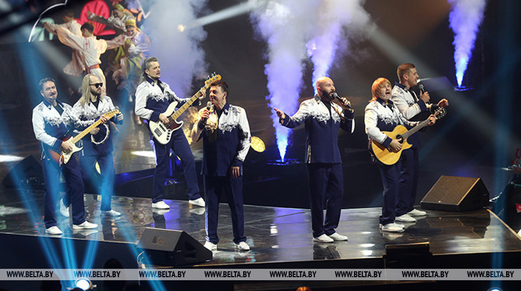

История ансамбля
ВИА "Песняры" — один из самых известных вокально-инструментальных ансамблей СССР, образованный в 1969 году в Беларуси. Группа стала символом белорусской музыкальной культуры и известна своими мелодичными песнями, основанными на народных мотивах. Основатели и ранние годы Ансамбль был создан по инициативе композитора и аранжировщика Александра Тихановича. В ранние годы "Песняры" исполняли как оригинальные композиции, так и обработки белорусских народных песен. Их уникальный стиль сочетал элементы фольклора, поп-музыки и классической музыки. Популярность В 1970-х годах "Песняры" стали популярными не только в Беларуси, но и за пределами страны. Их песни, такие как "Каскады", "Забава" и "Павлин", завоевали сердца слушателей. Группа активно выступала на международных фестивалях и конкурсах, получая призы и награды. Музыкальные достижения Песняры записали множество альбомов и синглов, их творчество охватывало разные жанры, включая рок, поп и фольклор. Группа сотрудничала с известными композиторами и поэтами, что способствовало созданию запоминающихся произведений. Разделение и возрождение В начале 1990-х годов, после распада СССР, ансамбль распался на несколько составов. Однако, благодаря любви поклонников и стремлению музыкантов продолжать творчество, "Песняры" были возрождены. Новые составы сохранили традиции группы, продолжая исполнять как старые хиты, так и новые композиции. Наследие ВИА "Песняры" оставили глубокий след в истории музыки не только Беларуси, но и всего бывшего Советского Союза. Их влияние ощущается и сегодня, и музыка группы продолжает вдохновлять новое поколение исполнителей. Таким образом, "Песняры" стали не только музыкальным явлением, но и культурным символом, который объединяет поколения.
